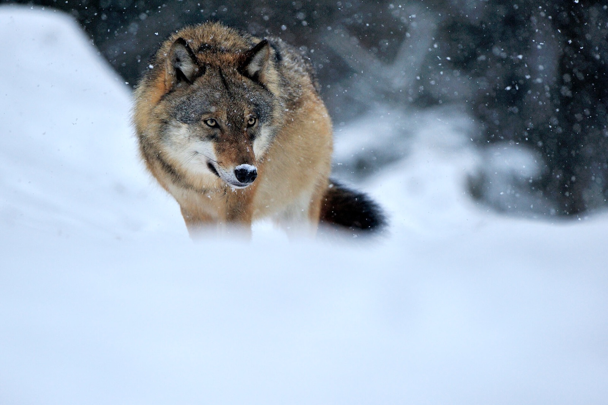
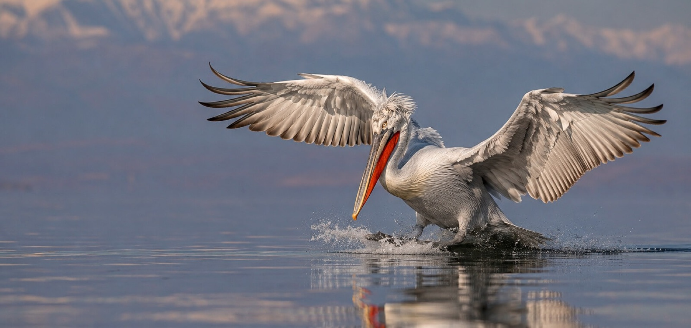

01 / 04Olifant bij zonsondergang
Workshops en reizen · Nederland, Duitsland, Griekenland en Zambia
Kijk verder. Beleef de natuur.
Natuurfotografie met Marco de Paauw. Van de kreken van de Biesbosch tot de wildernis van Zambia. Leer kijken, maak mooie beelden en geniet van wat je tegenkomt.